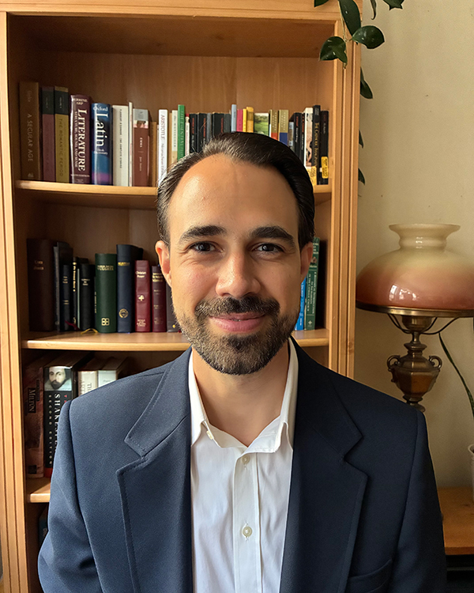
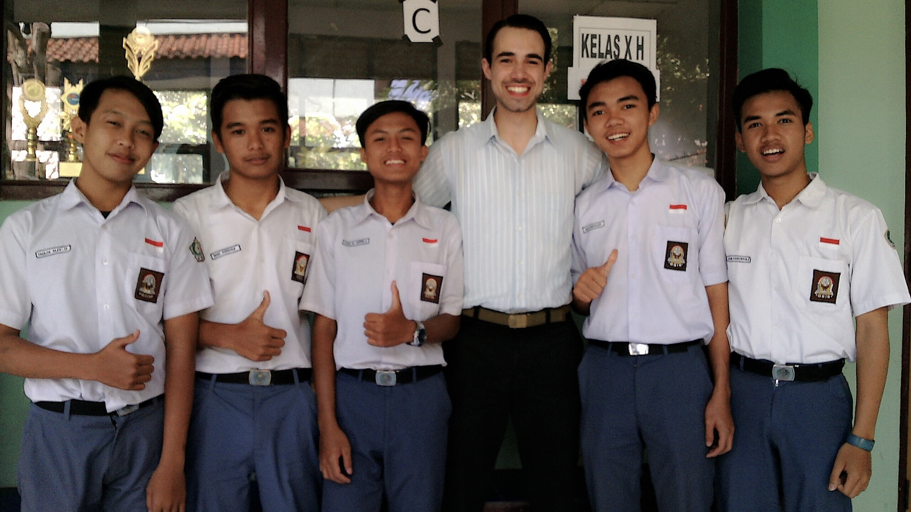

Dylan M. Renca
- Reach out: DylanMikelRenca@gmail.com
- Visit LinkedIn
- Fulbright Teaching Award (2014)
- Blog on the Liberal Arts
Dylan's teaching is enriched by his Catholic faith, his love of the liberal arts, and a decade of classroom experience.
Biography
Dylan Renca is an experienced K-12 teacher with a passion for the classical liberal arts. His expertise is in English language and literature with additional interests in writing composition, history, philosophy, and theology. He is an alumnus of Saint Michael’s College, a private Catholic liberal arts college in northern New England, where he graduated with a Bachelor of Arts in English and religious studies (magna cum laude). He has a certificate in Catholic evangelization from the Word on Fire Institute and earned a doctorate from Boston University in 2026.

Above: Dylan teaching in the classroom, Fall 2026.
Teaching Pedagogy
Dylan’s teaching pedagogy is informed by a Catholic anthropology that takes seriously the need to nurture the whole human person – mind, body, and spirit. He is experienced in the Socratic method and teaches in a manner that encourages students to see faith and reason as complementary. Dylan actively works to create a warm classroom environment and builds supportive relationships with students to encourage high achievement.
In the Classroom
Dylan’s extensive experience in the classroom allows him to support students from a variety of backgrounds and in different phases of their educational journey. He has taught at the elementary, middle school, and high school levels in private and public schools in the United States and abroad, as well as at a Catholic liberal arts college and a Christian research university. In 2014, Dylan was selected by the U.S. Fulbright Student Program to teach English and represent the U.S. as a cultural ambassador overseas.

Above: Dylan poses with high school students while teaching English with the U.S. Fulbright Program, Spring 2015.
Beyond the Classroom
Dylan is a seasoned Catholic retreat leader, a skilled organizer of school debates and competitions, and enjoys supervising extracurricular clubs and organizations. Having participated in cross-country, competitive skiing, and track and field in his youth, he is a strong proponent of student athletics as well.
Faith & Community Involvement
Dylan has dived deep into Catholic theology, literature, and history through coursework at both Saint Michael’s College and the Word on Fire Institute. A double-major in English and religious studies, his undergraduate training included courses in Latin, classics, Western literature, and Christianity and featured works by Plato, Plotinus, O'Connor, Chesterton and St. Thomas Aquinas. His faculty mentors include scholars of Shakespeare, Milton, Dante, the British romantic poets, and St. Augustine of Hippo. Dylan's knowledge of the liberal arts has also been enriched through doctoral coursework at Boston University in the humanities and social sciences.

Above: Dylan in conversation with the director of Saint Michael's College Campus Ministry, Fall 2010.
Giving Back
Responding to the call to serve, Dylan strives to live his faith in a way that enriches the lives of others. As an undergraduate, he took on a leadership role in Catholic campus ministry. Dylan helped organize biannual religious retreats where he offered spiritual witness talks to peers. As an intern with JustFaith Ministries, he collaborated with his home parish to teach evening classes on Catholic Social Teaching. Throughout his middle and high school years, Dylan regularly served as an acolyte in his parish and the wider diocese.
Education
Doctor of Philosophy, Boston University (2026)
Diploma in Teaching English to Speakers of Other Languages, Saint Michael's College (2013)
Bachelor of Arts, Saint Michael's College (2013)
Select Awards:
Certificate in Evangelization, Word on Fire Institute (2026)
U.S. Fulbright English Teaching Award (2014-15)
Phi Beta Kappa, National Academic Honor Society (Inducted 2013)
Delta Epsilon Sigma, National Catholic Honor Society (Inducted 2013)
Theta Alpha Kappa, National Honor Society for Religious Studies (Inducted 2012)
Saint Michael's College Honors Program (2009-2013)
Catholic Daughters of America Service Fellowship (2009-2013)

Personal Interests
In his free time, Dylan enjoys hiking, jogging, cycling and is an aficionado of classical and jazz music. He is also a lover of languages, having studied Latin, French, Spanish, Dutch, Indonesian, and Javanese. He likes a good mystery, especially A.C. Doyle and Agatha Christie. His spiritual life is enriched by the Rosary, the writings of the Church Fathers, and accounts of the lives of the saints.